CRM ELIMAZ · M3 · TASK M3-40 (131) · 21/11/2026
Mockup M3 vận chuyển và tiền: tám màn, Hiện tại / Đề xuất
Đề xuất cho tám màn của mốc M3, vẽ bằng đúng hệ thiết kế đã duyệt ở M1 (docs/mockups/m1/m1.css) và thành phần M2: chỉ màu, cỡ chữ, bo góc có sẵn; không có gì chỉ hiện khi rê chuột; nút trên điện thoại cao ít nhất 44 px. Mỗi màn có nhiều trạng thái xếp dọc (khung viền đứt là ghi chú của mockup).
Đọc trang này thế nào
- Hiện tại: shop gửi hãng, đối soát COD trên Nhanh.vn và Excel; CRM không đọc dữ liệu Nhanh nên không có ảnh chụp. Cột "Hiện tại" ghi theo spec 01 và màn M1, M2 đã chốt; "chưa khảo sát" khi chưa biết.
- Đề xuất: ảnh 1512 × 767 (laptop của chủ shop), 1280 × 800 và 390 × 844 (điện thoại); màn kho thêm 360 × 800. Bấm ảnh để xem cả trang.
- Ảnh và tự soát sinh lại bằng
docs/mockups/m3/soat.mjs.
(1) Kết nối vận chuyển
Mở mockupĐường: /settings/carriers, /settings/carriers/:id, /settings/fulfillment · Task 132. Trạng thái: A danh sách 9 tài khoản đủ sáu trạng thái (tên 60 ký tự, tài khoản thử, nhập mã tay, tự giao) · B thêm tài khoản (chọn hãng, cách nối, môi trường, kho, khóa ô mật khẩu) và bốn kết quả kiểm tra · C sửa tài khoản: khóa đã lưu "Thay khóa", kiểm tra kết nối, URL webhook, việc hãng làm được, địa giới chưa khớp, địa chỉ lấy hàng, tạm ngừng/thu hồi · D cần cấp quyền lại, đã thu hồi, hộp Thay khóa · E chỉ có quyền xem, 0 tài khoản · F cài đặt ngưỡng (lỗi "0%"). Ca kiểm: VC01, VC15.

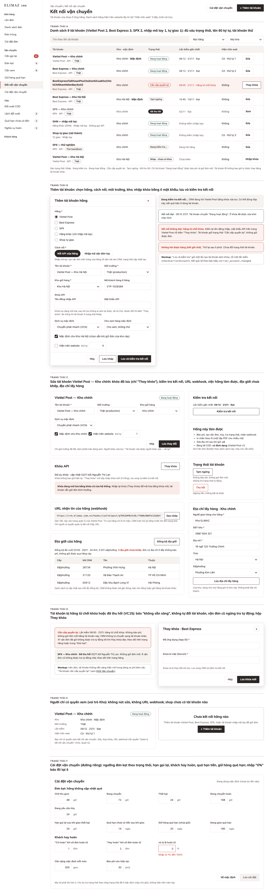


(2) Khối Vận chuyển trên đơn
Mở mockupĐường: vùng mới của chi tiết đơn M2 · Task 133, 134. Trạng thái: A chưa gửi: so phí 5 tài khoản của Kho chính (giá, đang hỏi, cần cấp quyền lại, nhập tay, tự giao), cân nặng, khai giá, cho xem, phí khi từ chối, ghi chú, băng "hay hoàn", Gửi hãng · B báo phí quá hạn, hãng không trả lời, đang gửi, COD 0 ₫ · C không rõ đã tạo (Đã tạo + ô mã / Chưa tạo), chưa gửi được (Gửi lại), hãng từ chối · D đã gửi: mã, nhãn trạng thái, cập nhật lần cuối, đồng bộ lại, in nhãn, đổi địa chỉ, hủy/đổi hãng, COD bốn ngăn, dòng thời gian 12 sự kiện có nguồn, vận đơn cũ · E kẹt 80 giờ, đang yêu cầu hủy, hãng từ chối hủy, thành công hãng đang giữ 9 chữ số · F hộp hủy/đổi hãng, đổi địa chỉ (qua API và gọi hãng) · G nhập mã tay, cập nhật trạng thái có lý do · H tên 60 ký tự, không có quyền gửi ở kho. Ca kiểm: VC02, VC03, VC05, VC06, VC11, VC12, VC14, VC16, VC18, TD03, DH15, TI01.

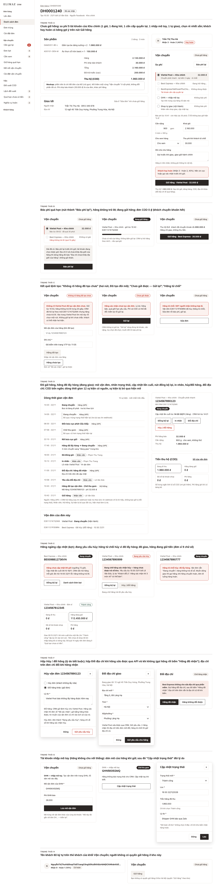


(3) Thẻ khách nhận/hoàn
Mở mockupĐường: ô chọn khách của Lên đơn M2 và khối Vận chuyển · Task 134. Trạng thái: A ba mức (không, Có hoàn, Hay hoàn kèm gợi ý), chưa có đơn kết thúc · B dòng gợi ý khi tìm khách (tên 60 ký tự) · C trên khối Vận chuyển. Ca kiểm: DH03.

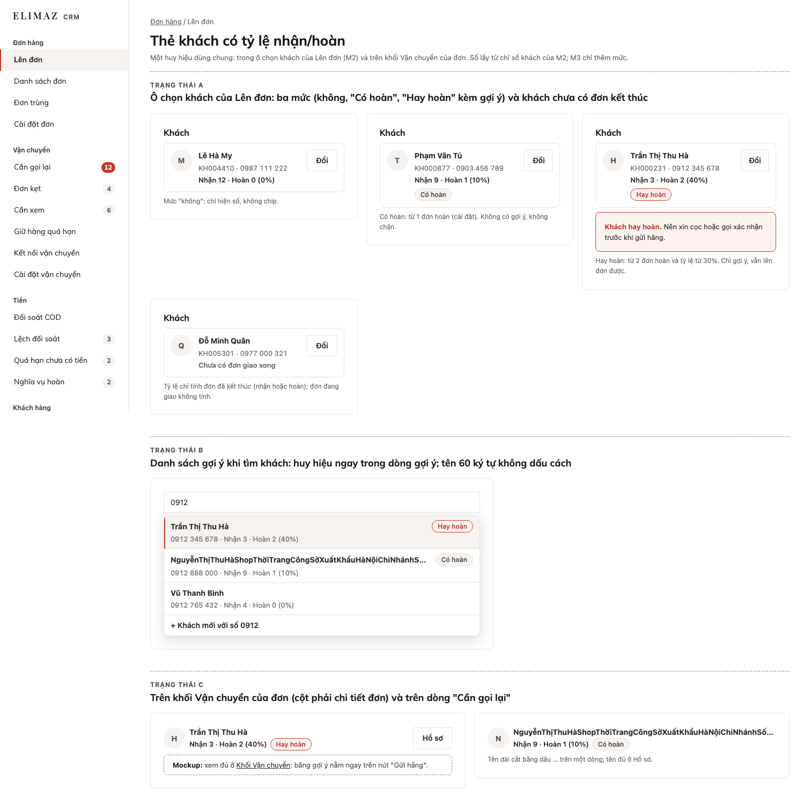


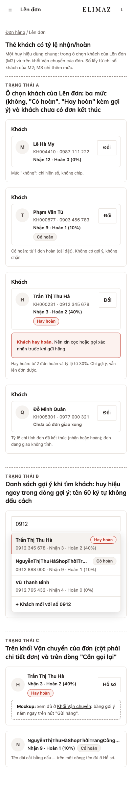
(4) Danh sách vận hành
Mở mockupĐường: /ops/callbacks, /ops/stuck, /ops/review, /ops/aged-holds · Task 135. Trạng thái: A Cần gọi lại 200 việc, quá hạn đầu, Hiện số, Gọi, Nhận việc, Giao lại, Ghi kết quả · B hộp kết quả (5 lựa chọn, hẹn giờ), giao lại địa chỉ mới, giao việc · C 0 và 1 việc · D Đơn kẹt (đang giao, chờ thu gom, lệnh gửi không xong) · E Cần xem theo loại, câu hướng dẫn, nút xử lý, hộp "Đã xử lý" · F Giữ hàng quá hạn (không nút nhả). Ca kiểm: VC07, VC16, VC18, KH09.

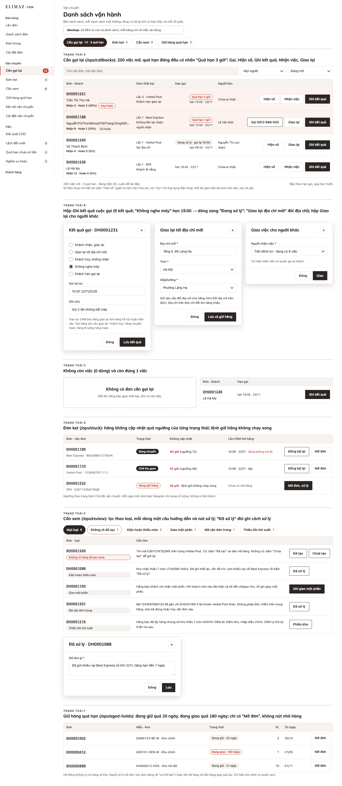


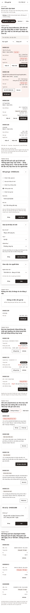
(5) Kho
Mở mockupĐường: /warehouse/pack, /warehouse/returns/receive/:returnId · Task 136. Trạng thái: A chọn 5 vận đơn hai hãng + tự giao, thanh chọn nhiều, 200 dòng · B kết quả in nhãn theo lô (mỗi hãng một PDF, tự giao bị bỏ qua, lô lỗi), đóng gói "đã ở bước sau" · C phiếu nhặt hàng (trang in, không địa chỉ) · D nhận hàng hoàn Tốt/Hỏng/Thiếu (thiếu phân loại → nút khóa; đủ → kết quả), hãng báo đã hoàn chưa đổi tồn · E nhận hàng khách trả, 0 đơn. Ca kiểm: VC04, TD02, TD04.


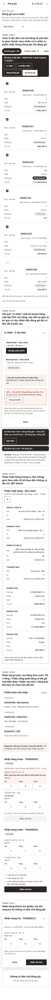
(6) Trả, đổi, giao một phần
Mở mockupĐường: hộp trả/đổi của chi tiết đơn M2 · Task 138. Trạng thái: A phiếu trả theo món (còn được trả, tính cả phiếu mở), tạo là đã duyệt, hủy phiếu · B đổi size: món trả, món mới, cấn trừ, COD đơn mới; món trả đắt hơn → nghĩa vụ hoàn · C giao một phần: món khách nhận, tiền thực thu; không có quyền. Ca kiểm: TD05, TD06, TD08, TD09.

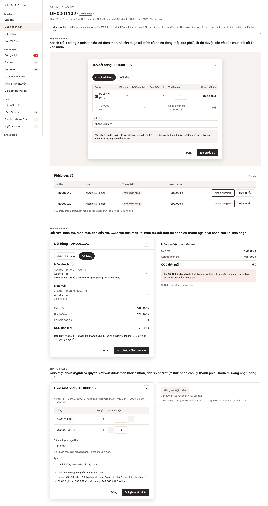


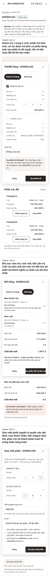
(7) Đối soát COD
Mở mockupĐường: /cod/statements, /cod/statements/:id, /cod/discrepancies, /cod/overdue · Task 137. Trạng thái: A danh sách bảng kê (đang phân tích, lỗi cột, chờ chốt, đã chốt) · B hộp nhập (tài khoản, tệp, định dạng), tệp trùng, ba lỗi tệp · C chi tiết 206 dòng: năm nhóm có tổng tiền 9 chữ số, dòng lệch, ngoài hệ thống, thanh Chốt · D người khác vừa chốt, cảnh báo sau chốt · E Lệch đối soát · F Quá hạn chưa có tiền, 0 dòng. Ca kiểm: TI02, TI04, TI05, TI06, TI07.

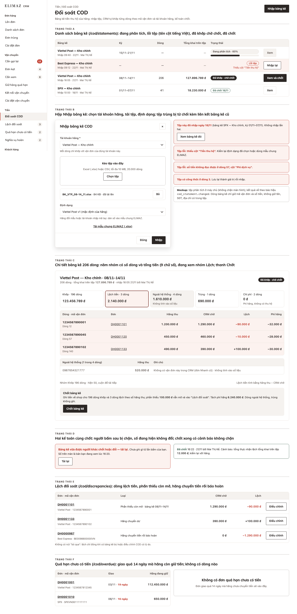


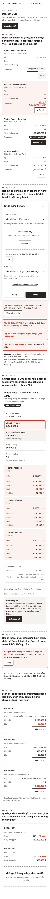
(8) Tiền trên đơn
Mở mockupĐường: khối Tiền của chi tiết đơn, /refund-obligations · Task 138. Trạng thái: A phiếu thu, cọc (COD tự tính lại), đã gửi hãng không ghi được · B nghĩa vụ hoàn "Chưa chi — chưa tính là đã hoàn", chi một phần, miễn (chỉ Chủ), danh sách · C điều chỉnh COD hai bước, cảnh báo ngăn âm, bản xem trước mới · D đảo "Thành công" có xem trước, bị chặn khi hãng đã chuyển tiền, sổ COD có dòng đảo. Ca kiểm: TI08, TI09, TD10.

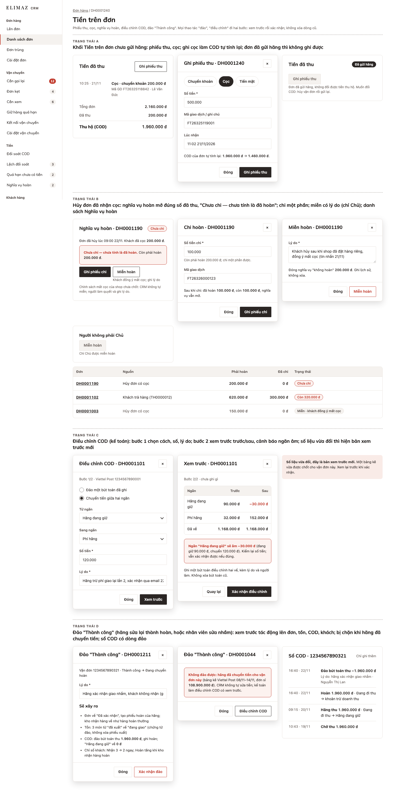


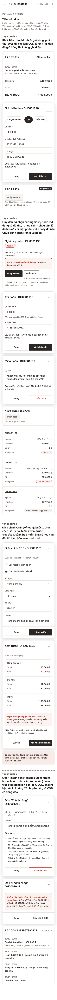
Ca kiểm → màn, trạng thái (32 ca)
| Ca | Nội dung (spec 11) | Vẽ ở |
|---|---|---|
| DH03 | Khung khách: lịch sử mua, tỷ lệ nhận và hoàn | Thẻ khách A, C; Khối Vận chuyển A |
| DH15 | Đổi địa chỉ sau khi gửi hãng phải qua hãng | Khối Vận chuyển F (hộp đổi địa chỉ, "Hãng đã nhận"), D (dòng thời gian); Vận hành B |
| KH09 | Giữ hàng quá 20 / 180 ngày: danh sách, không tự trả | Vận hành F |
| VC01 | Kết nối tài khoản hãng: kiểm tra kết nối đạt, khóa lưu mã hóa | Kết nối B, C |
| VC02 | So phí ba hãng ngay trên đơn | Khối Vận chuyển A, B |
| VC03 | Gửi hãng: có mã vận đơn, nhãn "Chờ thu gom" | Khối Vận chuyển A (nút), D (mã, nhãn), G (Chờ thu gom) |
| VC04 | In nhãn và đóng gói; in lại không lùi đóng gói | Kho A, B |
| VC05 | Hãng lấy hàng: trạng thái tự về, hàng "đang giao" | Khối Vận chuyển D (dòng thời gian 17:45) |
| VC06 | Giao thành công, xuất kho một lần | Khối Vận chuyển E |
| VC07 | Giao thất bại → danh sách cần gọi lại | Vận hành A, B |
| VC11 | Hủy rồi gửi hãng khác | Khối Vận chuyển F (hộp đổi hãng), D (vận đơn cũ đã hủy) |
| VC12 | Hãng từ chối hủy vì đã lấy hàng | Khối Vận chuyển E |
| VC14 | Hãng không cho nối thẳng: dán mã, vẫn theo dõi | Kết nối A (GHN nhập mã tay); Khối Vận chuyển G |
| VC15 | Tài khoản bị thu hồi quyền: không sẵn sàng, không tự đổi | Kết nối A, D; Khối Vận chuyển A (dòng "Tài khoản cần cấp quyền lại") |
| VC16 | Tạo vận đơn quá giờ: "không rõ", một vận đơn | Khối Vận chuyển C; Vận hành D, E |
| VC18 | Hãng ngừng báo: "cập nhật lần cuối", cảnh báo kẹt | Khối Vận chuyển D, E; Vận hành D |
| TI01 | Giao xong, hãng chưa chuyển tiền: ngăn "hãng đang giữ" | Khối Vận chuyển E |
| TI02 | Nhập bảng kê, tự khớp, tách phí | Đối soát B, C |
| TI04 | Nhập cùng bảng kê hai lần: từ chối | Đối soát B |
| TI05 | Hãng chuyển thiếu, lệch: "Lệch đối soát", phần thiếu còn mở | Đối soát C, E |
| TI06 | Dòng của đơn Nhanh cũ: ngoài hệ thống, không tính | Đối soát C |
| TI07 | Hai kế toán cùng chốt: người sau bị chặn | Đối soát D |
| TI08 | Sửa nhầm đơn "Thành công" đã có tiền: xem trước, ghi dòng đảo | Tiền D |
| TI09 | Hủy đơn đã nhận cọc: nghĩa vụ hoàn, chưa chi chưa là đã hoàn | Tiền B |
| TD02 | Hàng hoàn về: chỉ khi kho bấm nhận tồn mới tăng | Kho D |
| TD03 | Hủy đơn đã gửi hãng: "đang yêu cầu hủy" | Khối Vận chuyển E, F |
| TD04 | Kiện hoàn có món tốt, hỏng, thiếu | Kho D |
| TD05 | Khách trả một trong hai món: phiếu theo món | Trả đổi A |
| TD06 | Khách đổi size: phiếu trả + đơn mới, không sửa đơn gốc | Trả đổi B |
| TD08 | Duyệt trả khi chưa nhận hàng: chưa tăng tồn, chưa hoàn tiền | Trả đổi A |
| TD09 | Khách chỉ nhận một phần kiện | Trả đổi C; Vận hành E |
| TD10 | "Đã giao" rồi sửa thành "hoàn": ghi bù tồn, COD | Tiền D |
Thay đổi hành vi (35 dòng)
Mỗi dòng cần chủ shop OK riêng| # | Màn | Hành vi đề xuất | Hiện tại | Chủ shop OK |
|---|---|---|---|---|
| HV01 | Khung | Menu thêm nhóm "Vận chuyển" (Cần gọi lại, Đơn kẹt, Cần xem, Giữ hàng quá hạn, Kết nối vận chuyển, Cài đặt vận chuyển) và "Tiền" (Đối soát COD, Lệch đối soát, Quá hạn chưa có tiền, Nghĩa vụ hoàn) ngay sau "Đơn hàng"; nhóm Kho thêm "Đóng gói", "Nhận hàng hoàn". | Menu M2: Đơn hàng, Khách hàng, Khuyến mãi, Sản phẩm, Kho, Hệ thống, Quản trị. | chưa |
| HV02 | Khung | Số đếm cạnh mục menu (Cần gọi lại, Đơn kẹt, Cần xem, Lệch đối soát, Quá hạn chưa có tiền, Nghĩa vụ hoàn); Cần gọi lại nền đỏ khi có việc quá hạn; cập nhật theo báo hiệu. | Menu M2 không có số. | chưa |
| HV03 | Kết nối | Danh sách tài khoản là một bảng; thêm tài khoản là hộp thoại; sửa là trang riêng /settings/carriers/:id. | Nhanh: kết nối hãng trong cài đặt của Nhanh; chưa khảo sát. | chưa |
| HV04 | Kết nối | Khóa API không bao giờ hiện lại (cả Chủ); chỉ có "Thay khóa" mở hộp ô trống; lưu xong CRM tự kiểm tra kết nối; ô khóa xóa khỏi màn sau khi lưu. | Chưa khảo sát. | chưa |
| HV05 | Kết nối | "Hiện trên web" và thứ tự đặt ở tài khoản hãng trong CRM; website đọc từ đây (một nơi lưu, Q-30). | Chọn hãng hiện trên web nằm ở admin website. | chưa |
| HV06 | Kết nối | Cài đặt vận chuyển là trang riêng; tỷ lệ "hay hoàn" nhập theo %; chu kỳ tra trạng thái không hiện (máy chủ giữ mặc định). | — | chưa |
| HV07 | Khối Vận chuyển | Mở đơn "Đã xác nhận" chưa gửi hãng: CRM tự hỏi phí mọi tài khoản đang hoạt động của kho đơn một lần (giữ 30 phút); "Báo phí lại" để hỏi lại; quá hạn thì nút gửi thành "Báo phí lại". | Nhanh: chưa khảo sát. | chưa |
| HV08 | Khối Vận chuyển | Chọn sẵn giá rẻ nhất; tài khoản lỗi hoặc không dùng được vẫn hiện một dòng kèm lý do, không bao giờ hiện "0 ₫"; tài khoản nhập mã tay hiện "Không báo phí". | — | chưa |
| HV09 | Khối Vận chuyển | Băng đỏ "Khách hay hoàn" ngay trên nút "Gửi hãng", chỉ gợi ý, không chặn. | — | chưa |
| HV10 | Khối Vận chuyển | Nút "Gửi hãng · <hãng> · <phí>" gửi ngay, không hộp xác nhận; khóa khi đang gửi. | — | chưa |
| HV11 | Khối Vận chuyển | "Không rõ hãng đã tạo chưa": hai nút "Hãng đã tạo" (đòi mã hãng) / "Hãng chưa tạo", không có "Gửi lại"; "Chưa gửi được" có "Gửi lại", CRM không tự gửi. | — | chưa |
| HV12 | Khối Vận chuyển | Hủy vận đơn và đổi hãng chung một hộp (chọn "Hủy đơn" hoặc "Đổi hãng khác"), lý do bắt buộc. | Màn M2: "Hủy đơn" riêng (đơn đã gửi hãng thành yêu cầu hủy). | chưa |
| HV13 | Khối Vận chuyển | Đổi địa chỉ sau khi gửi là hộp thoại; hãng không sửa được qua API thì hiện việc chờ với hai nút "Hãng đã nhận" / "Hãng không đổi được"; địa chỉ trên đơn chỉ đổi khi hãng nhận. | Màn M2: địa chỉ khóa sau khi gửi hãng. | chưa |
| HV14 | Khối Vận chuyển | Dòng thời gian vận đơn mới nhất trên đầu, chip nguồn (Hãng (API) / Nhân viên / Hệ thống; tin webhook chỉ làm CRM hỏi lại hãng, không là nguồn); sự kiện bị bỏ qua vẫn hiện, nhạt, viền đứt, kèm lý do. | Nhanh: lịch sử trạng thái; chưa khảo sát. | chưa |
| HV15 | Khối Vận chuyển | Khung COD bốn ngăn (Đang đi thu / Hãng đang giữ / Đã về tài khoản shop / Phí hãng), ngăn đang có tiền viền đậm, liên kết "Sổ của vận đơn". | Màn M2: chỉ dòng "Thu hộ (COD)". | chưa |
| HV16 | Khối Vận chuyển | Vận đơn nhập tay: dán mã khi gửi; "Cập nhật trạng thái" là hộp thoại đòi giờ và lý do; "Đã hoàn về kho" không chọn ở đây. | — | chưa |
| HV17 | Thẻ khách | Huy hiệu "Nhận n · Hoàn m (x%)" và chip "Có hoàn"/"Hay hoàn" ở ô chọn khách, dòng gợi ý khi tìm, khối Vận chuyển, dòng Cần gọi lại; "Hay hoàn" thêm hộp gợi ý "xin cọc hoặc gọi xác nhận". | Màn M2: thẻ khách có số đơn, chưa có mức hoàn. | chưa |
| HV18 | Vận hành | Bốn danh sách có thanh chuyển nhanh kèm số đếm trên đầu (mỗi danh sách vẫn là một đường riêng). | — | chưa |
| HV19 | Vận hành | Cần gọi lại: SĐT ẩn tới khi bấm "Hiện số", sau đó nút "Gọi <số>" mở ứng dụng điện thoại. | Chưa khảo sát. | chưa |
| HV20 | Vận hành | Ghi kết quả gọi là hộp thoại 5 lựa chọn; "Không nghe máy" và "Khách hẹn gọi lại" có ô giờ gọi lại, dòng chuyển "Đang xử lý · gọi lại 15:00"; "Giao lại tới địa chỉ mới" mở hộp địa chỉ và gửi yêu cầu đổi địa chỉ cho hãng. | Chưa khảo sát (nhân viên tự ghi nhớ). | chưa |
| HV21 | Vận hành | Cần xem: lọc theo loại; mỗi dòng một câu hướng dẫn và nút xử lý riêng theo loại (Đã tạo/Chưa tạo, Ghi giao một phần, Phiếu kho); "Đã xử lý" đòi ghi đã làm gì. | — | chưa |
| HV22 | Vận hành | Giữ hàng quá hạn chỉ có "Mở đơn", không nút nhả hàng. | — | chưa |
| HV23 | Kho | Màn Đóng gói: chọn nhiều dòng → thanh đen trên bảng (In nhãn, In phiếu nhặt, Đang đóng gói, Đã đóng gói); In nhãn mở hộp kết quả, mỗi tài khoản hãng một tệp PDF của hãng, vận đơn tự giao bị bỏ qua có câu. | Nhanh: in nhãn hàng loạt; chưa khảo sát. | chưa |
| HV24 | Kho | Đóng gói chỉ đi tới; dòng chọn lùi bước không đổi, được kể trong thông báo; in lại nhãn không đổi cột "Đóng gói". | — | chưa |
| HV25 | Kho | Phiếu nhặt hàng là trang in A4 đen trắng: gom theo mẫu rồi kê theo đơn; không địa chỉ, SĐT khách. | Chưa khảo sát. | chưa |
| HV26 | Kho, Trả đổi | Nhận hàng hoàn và hàng khách trả: mỗi dòng ba ô Tốt / Hỏng / Thiếu; nút "Nhận vào kho" khóa tới khi tổng bằng số đã gửi/trả, kèm câu "Còn thiếu n món chưa phân loại". | Màn M2: một tình trạng cho cả dòng, hai tình trạng thì tạo hai phiếu. | chưa |
| HV27 | Trả đổi | Hộp trả/đổi của M2 thêm cột "Còn được trả" (tính cả phiếu đang mở) và hộp "Tạo phiếu là đã duyệt — tồn, tiền chưa đổi tới khi kho nhận"; không có bước duyệt riêng (Q-28). | Màn M2: cột "Đã trả", không ghi rõ chưa đổi tồn. | chưa |
| HV28 | Trả đổi | Đổi hàng hiện món trả, món mới, "Cấn trừ" và "COD đơn mới" (không âm); món trả đắt hơn thì phần dư thành nghĩa vụ hoàn sau khi kho nhận. | Màn M2: phiếu đổi tạo đơn mới, chưa có tiền cấn trừ. | chưa |
| HV29 | Trả đổi | Giao một phần là hộp thoại mở từ "Cần xem" hoặc đơn, chỉ người có quyền sửa vận đơn (Chủ, Quản lý); người khác thấy nút mờ kèm lý do. | — | chưa |
| HV30 | Đối soát | Nhập bảng kê là hộp thoại (tài khoản, tệp, định dạng); phân tích chạy nền, danh sách có thanh tiến độ; tệp trùng bị từ chối kèm nút "Xem bảng kê đó". | Chưa khảo sát (kế toán đối chiếu bằng Excel). | chưa |
| HV31 | Đối soát | Chi tiết bảng kê: năm ô nhóm (Khớp, Lệch tiền, Ngoài hệ thống, Trùng, Chỉ phí) bấm để lọc bảng; chốt cả bảng kê một lần, không chốt từng dòng. | Chưa khảo sát. | chưa |
| HV32 | Đối soát | Lệch đối soát không có nút "bỏ qua": chỉ đóng khi có bảng kê bù hoặc điều chỉnh COD có lý do. | — | chưa |
| HV33 | Tiền | Ghi phiếu thu, cọc là hộp thoại; hiện COD trước → sau; đơn đã gửi hãng thì nút mờ kèm lý do (đổi COD phải hủy vận đơn rồi gửi lại). | Nhanh: chưa khảo sát. | chưa |
| HV34 | Tiền | Nghĩa vụ hoàn: chi một phần được; "Miễn hoàn" chỉ Chủ, đòi lý do; danh sách Nghĩa vụ hoàn có cột Phải hoàn / Đã chi / Trạng thái. | — | chưa |
| HV35 | Tiền | Điều chỉnh COD và đảo "Thành công" đi hai bước (xem trước rồi xác nhận); cảnh báo ngăn âm vẫn cho xác nhận; bị chặn thì không có nút xác nhận, chỉ có lối sang "Điều chỉnh COD". | — | chưa |